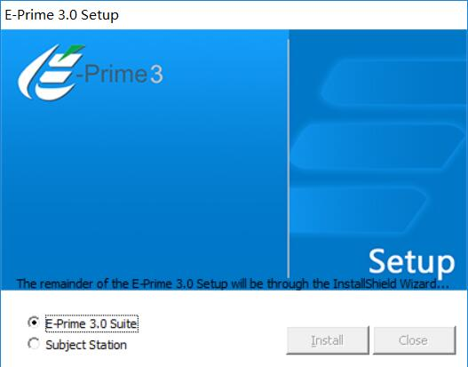
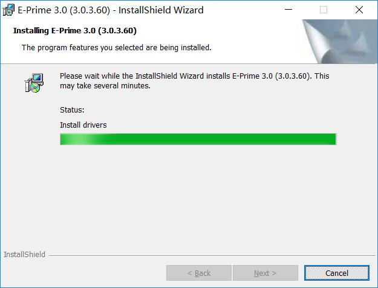
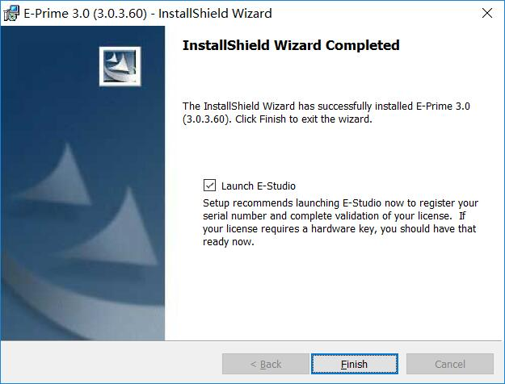
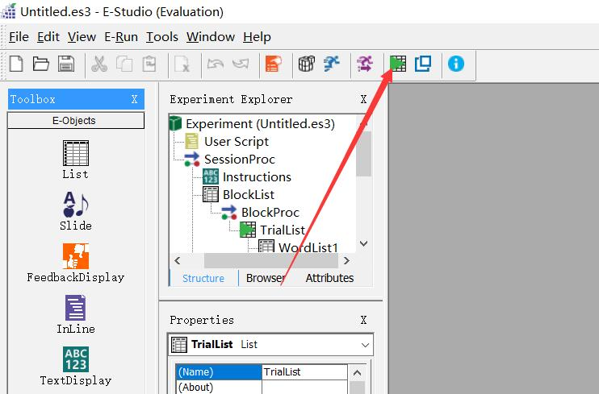
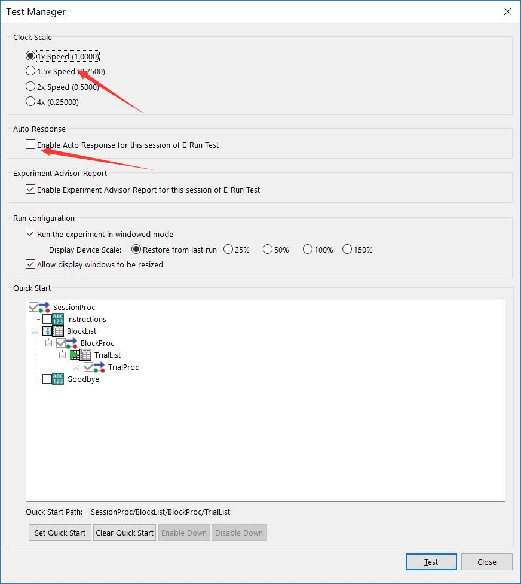
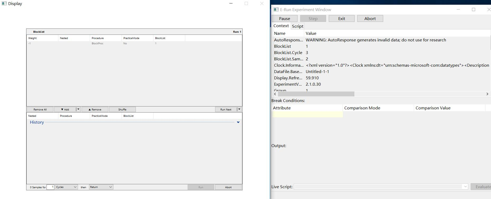

Eprime3.0试用版安装体验(附下载地址)
今天我感受了一下Eprime3.0(e-prime3.0)的试用版, 说实话Eprime的优化明显. 作为一个Eprime的重度使用患者, 看到Eprime对之前痛点的优化还是很高兴的. 我们大概可以看一下Eprime3的一些特点:
E-Prime 3.0为研究人员提供了许多新功能，可以比以前更快地设计他们的实验。 E-Prime始终保持一个易于使用的界面，几乎不需要脚本。新的拖放子对象甚至进一步消除了对高级实验设计（如按钮和滑块）使用脚本的需求！其他补充包括更新后的界面，幻灯片布局模板，在线实验库以及有用的
调试工具。
- 新的调查工具
- 按钮子对象的响应
- 调查/召回的选择子对象
- 比例尺的滑块子对象
- 幻灯片布局模板
- 在线实验图书馆
- 自动生成文本数据文件
- 交互式运行列表行
- 脚本任务事件
- 物业发现和替换
- 从任何List对象快速启动
- 在浮动窗口中暂停/恢复
- 新的任务事件
- 改进的用户界面
- 在线文档
- 平板电脑和触摸屏的运行时支持
- 改进了音频/视频播放和加载时间
Eprime的很多功能并不新鲜, 其他刺激呈现软件早就做到了, 但是我感兴趣的是调试工具, 因为这个功能可以提高开发速度, 提高实验程序的准确性. 所以我感受了一下. 下面是我整个的安装和体验的过程.
- 安装过程没什么好说的, 下面是过程截图

注意这里安装可能需要10分钟


- 调试工具就在这里

- 你会看到打开一个对话框, 我们可以选择程序运行的速度和自动反应

- 然后你就能看到这个界面, 程序会自动运行, 然后在右侧就能看到一些输出, 我们可以用
debug.print来输出一些关键数据.

最后, 大家可以在这里下载Eprime3.0: https://pan.baidu.com/s/1i3I8Pi6KcAlFmAocxSmzPA 密码：qo20
链接可能会失效, 如果失效可以加群所要. 如果不想加群, 大家可以在评论区留下邮箱.